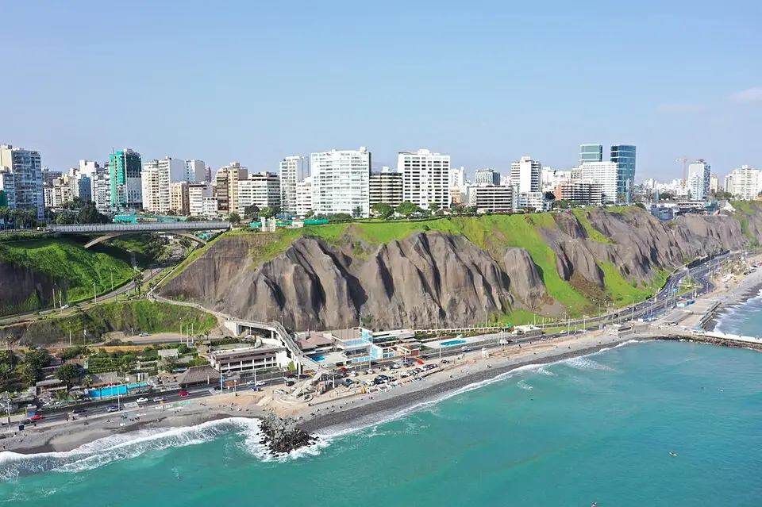

Rodrigo Castillo
About Me
My name is Rodrigo Castillo, I am a student at BYU-Pathway. I am from Lima, Peru. I am currently studying Web Development and I am excited to learn more about dynamic web fundamentals. I have a passion for technology and I am always looking for new ways to improve my skills.
Lima, Peru
Lima is the capital and largest city of Peru, sitting on the Pacific coast. It's home to around 10 million people, making it one of South America's biggest cities. Known for its incredible food scene (considered one of the world's top culinary destinations), its historic colonial center (UNESCO World Heritage), and neighborhoods like Miraflores and Barranco with ocean views. The weather is mostly grey and humid due to the coastal desert climate — not much rain but lots of fog. ☁️
